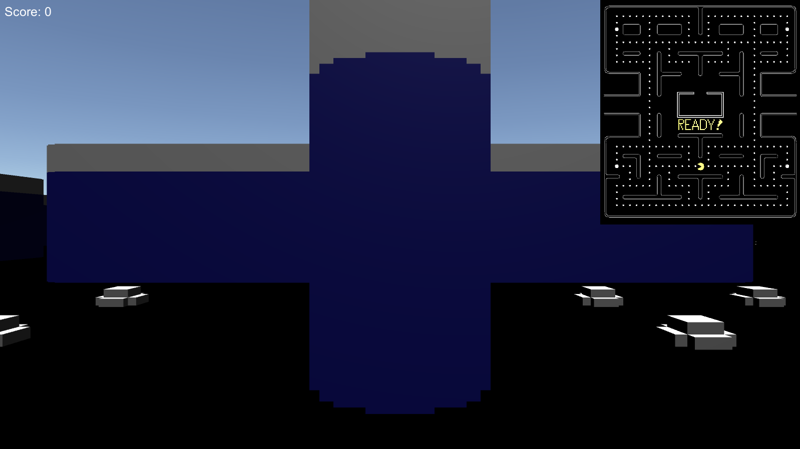

Pac-Man Remake
Pac-Man Remake
Description:
This is a reboot of Pac Man that I made for a computer literacy project which also adds in some unique twists. I still have not completely finished it so it will only work on a basic level (no teleporting to the other side or any power ups beyond a power pellet). However, it does add a first person perspective as well as the original top-down view. I hope to add more to this project later and hopefully complete it.